Logo completo horizontal · Normal negro
Logo completo horizontal · Negativo blanco
Logo completo vertical · Normal negro

Logo completo vertical · Negativo blanco
Isotipo simbolo · Normal negro
Isotipo simbolo · Negativo blanco
Logotipo nombre · Normal negro

Logotipo nombre · Negativo blanco